Hecho para ti.
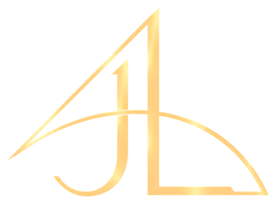
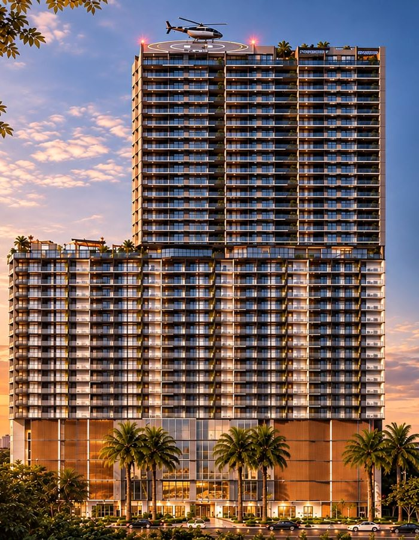
La torre, al atardecer
Un lugar para quedarse, por una noche o para siempre.
Aura Mare es un edificio de uso mixto frente al Caribe, en un lote de 2.722 m². La torre combina hogares de largo plazo y apartamentos para estancias cortas, cada grupo con su recepción y su sala de espera.
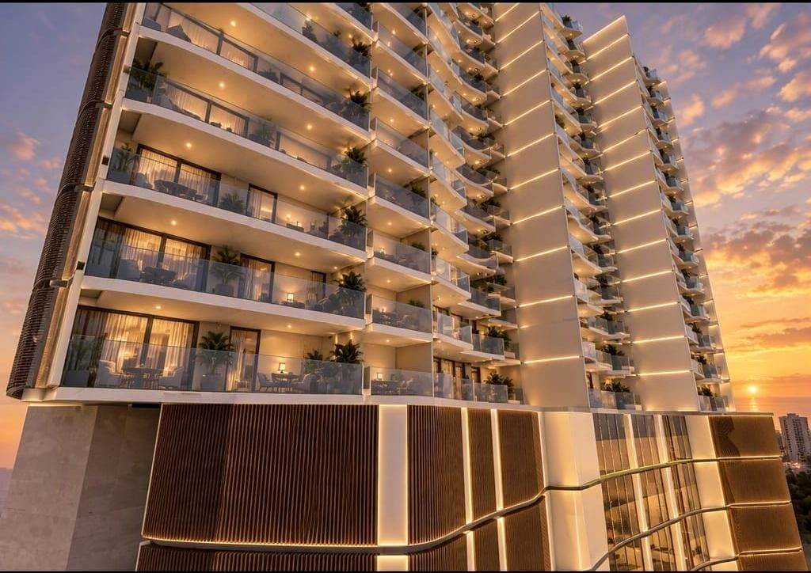
Balcones que miran al mar
Cada piso tiene balcones curvos con vegetación.
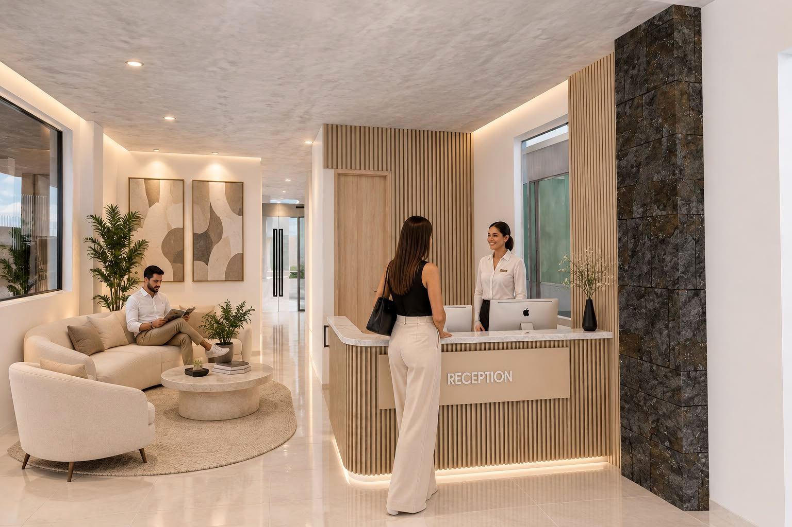
Lobby con doble recepción
Cada grupo con su recepción y su sala de espera.
Zonas comunes
- Piscina con solárium
- Bar en la terraza
- Salón social
- Gimnasio
- Billar y futbolín
- Zona de fogata
- Parque infantil
- Jardines
- Lobby con 2 recepciones
- 2 garitas de vigilancia
- 147 parqueaderos
- Plazoleta comercial
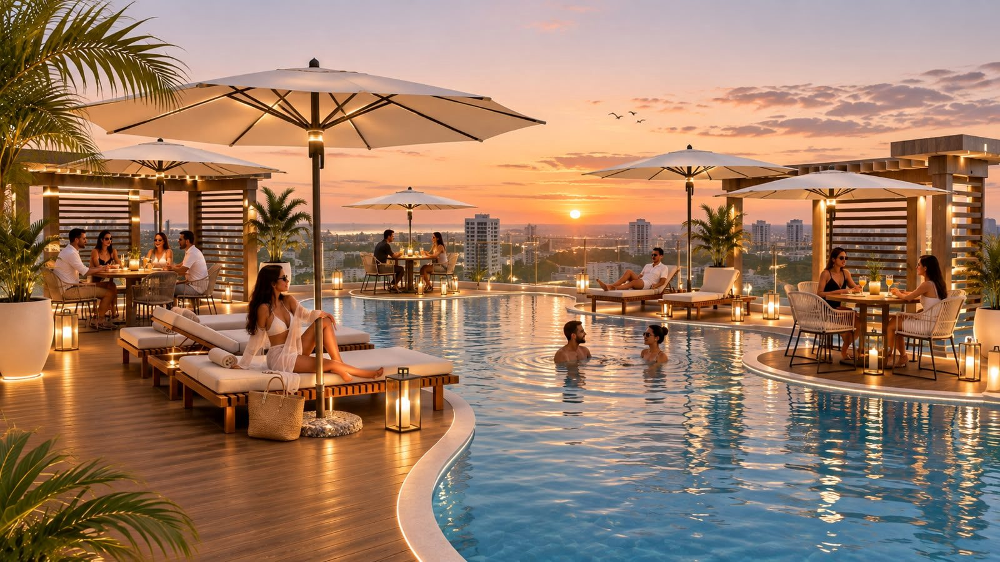
Piscina
Con solárium y vista al mar
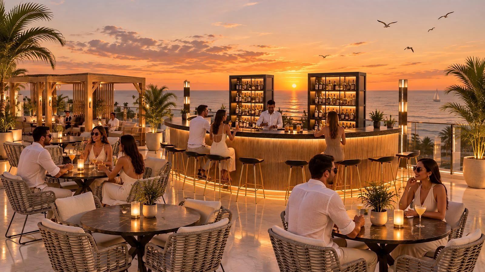
Bar en la terraza
Abierto al atardecer
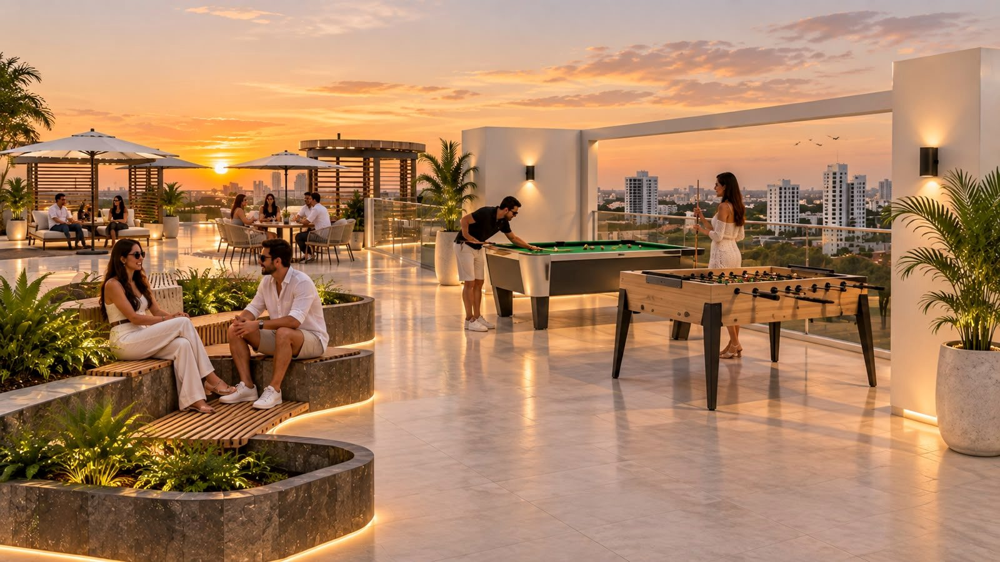
Sala de juegos
Billar y futbolín
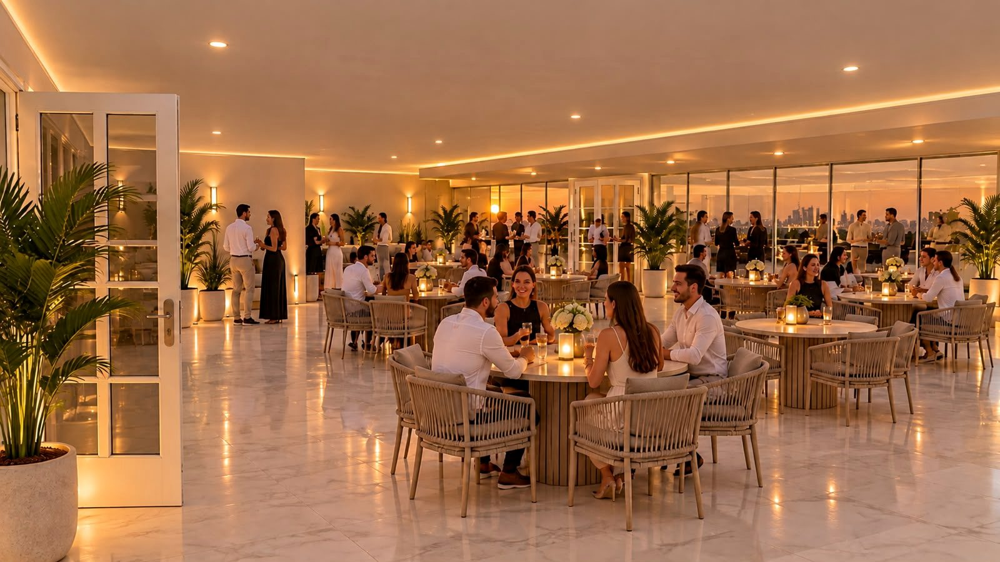
Salón social
Para reuniones y celebraciones
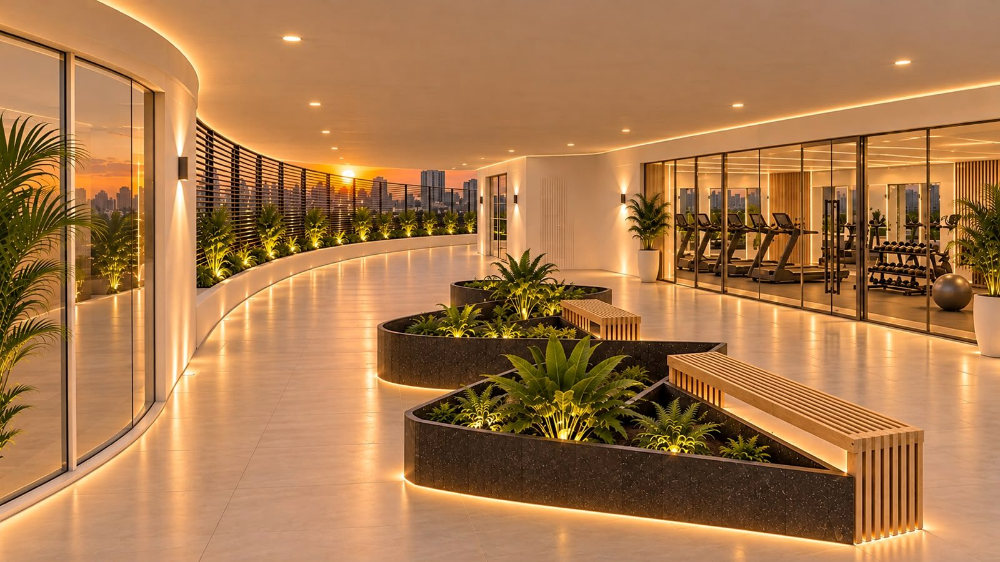
Gimnasio
Junto a un corredor verde
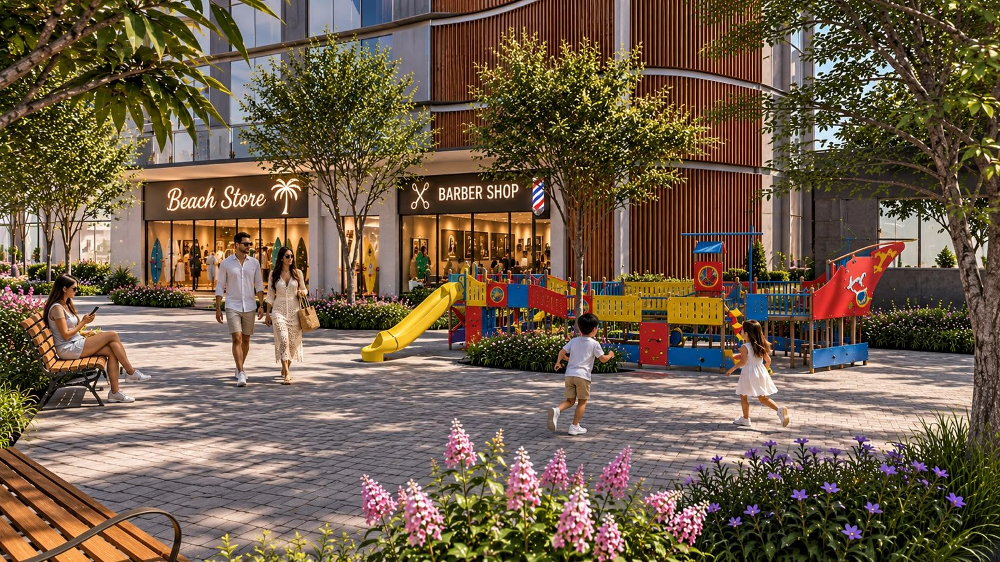
La ciudad, a un paso
- CafeteríaLocal 1
- Panadería y reposteríaLocal 2
- MinimarketLocal 3
- DrogueríaLocal 4
- FruteríaLocal 5
- Tienda de playaLocal 6
- BarberíaLocal 7
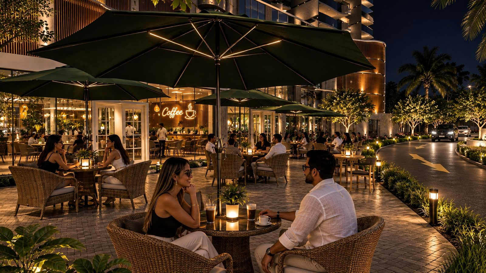
Cafetería
Local 1 · Plazoleta comercial
- Uso
- Mixto
- Lote
- 2.722 m²
- Locales
- 7
- Apartamentos
- 120 y 170 m²
- Parqueaderos
- 147
@aura_mare26
Gira tu teléfono